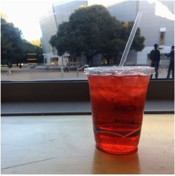

Italian soda at Bytes
350 Serra Mall, Stanford, CAWhen's the last time you've had an Italian soda? It had been a while for me, but I wanted to join my friend for a non-caffeinated beverage at Bytes and I became reacquainted with the combination of fizzy water and artificial fruit syrup. Italian sodas are not so sweet as a normal soda and not so boring as a flavored carbonated water. The Italian sodas at Bytes also have cream in them (or maybe they do if you ask; I haven't tried), which makes it a nice coffee shop alternative for the times when you're feeling a refreshing drink that doesn't have caffeine or milk.
Recommendation: Raspberry Italian soda
